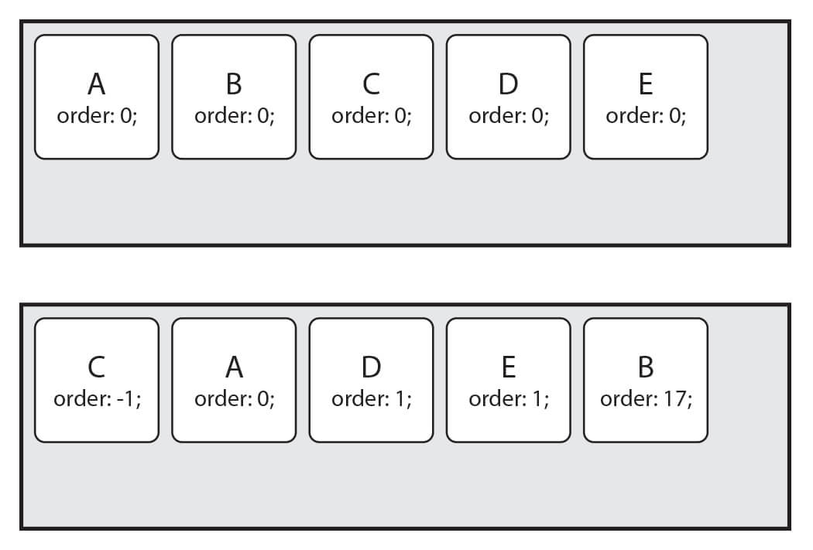

대부분 사이트는 전체 레이아웃이 수직 구성이며 ‘위-아래’로 스크롤 하여 사용합니다.
레이아웃을 구성할 때 가장 많이 사용하는 요소(Elements)들이 기본적으로 블록(Block) 개념으로 표시(Display)되며
이는 뷰(View)에 수직(위에서 아래로)으로 쌓이기 때문에 수직 구성은 상대적으로 쉽게 만들 수 있습니다.
하지만 수평(왼쪽에서 오른쪽으로) 구성의 경우는 상황이 조금 다릅니다.
문제는 수평 구조를 만드는 속성이 명확하지 않았기 때문인데,
그래서 많은 경우 <table>나 float 혹은 inline-block 등의 도움을 받았습니다.
하지만 이러한 방법들은 다양한 문제(Clear, White space 등, 해결은 가능하지만..)를 가지고 있기 때문에 결국 수평 레이아웃 구성의 차선책일 뿐이며,
이제 우리는 Flex(Flexible Box)라는 명확한 개념(속성들)으로 레이아웃을 쉽게 구성할 수 있습니다.
위에서 쉬운 수평 구성을 얘기했지만 Flex는 쉬운 수직 구성도 가능합니다.
시작하기에 앞서 간단한 얘제를 살펴봅시다.float 속성을 이용한 수평 구성의 경우 다음과 같이 스타일을 작성할 수 있습니다.
<div class="box"></div>
<div class="box"></div>
<div class="box"></div>
<div class="clear-element"></div>
.box {
float: left;
}
.clear-element {
clear: both; /* or left */
}
자세한 설명은 생략하고, 위 방법은 보기엔 단순하지만 box를 제외한 clear-element라는
이름(class)의 다음(next) 요소도 있어야 하기 때문에 실제 사용엔 매우 불편하며 명확하지 않은 방법으로써 많은 경우 아래 방식을 사용합니다.
<div class="clearfix">
<div class="box"></div>
<div class="box"></div>
<div class="box"></div>
</div>
/* IE 핵이나 기타 방식을 제외하고 가장 원리에 충실한 방법 */
.clearfix::after {
content: "";
clear: both;
display: block;
}
.box {
float: left;
}
예제를 보면 수평이 될 요소들에 직접! float를 적용하고 그 요소들의 Container(부모 요소)에 미리 설정한
clearfix를 적용합니다.
그러면 Flexible Box(이하 Flex)는 어떻게 작성할 수 있을까요?
아주 간단합니다.
<div class="box-container">
<div class="box"></div>
<div class="box"></div>
<div class="box"></div>
</div>
.box-container {
display: flex;
}
Flex는 수평이 될 요소들의 Container(box-container)에 display: flex;를 적용합니다.
(세부 속성이 필요하지 않은 경우도 많기 때문에 상당히 쉽고 빠르게 수평 요소를 구성할 수 있습니다.)
Flex는 요소의 크기가 불분명하거나 동적인 경우에도, 각 요소를 정렬할 수 있는 효율적인 방법을 제공합니다.
우선 Flex는 2개의 개념으로 나뉩니다.
첫 번째는 Container 두 번째는 Items 입니다.
위에서 살펴본 바와 같이 Container는 Items를 감싸는 부모 요소이며, 각 Item을 정렬하기 위해선 Container가 필수입니다.
주의할 부분은 Container와 Items에 적용하는 속성이 구분되어 있다는 것입니다.
Container에는 display, flex-flow,
justify-content 등의 속성을 사용할 수 있으며,
Items에는 order, flex, align-self 등의 속성을 사용할 수 있습니다.

Flex Container를 위한 속성들은 다음과 같습니다.
주 축(main-axis)과 교차 축(cross-axis)의 개념은 뒤에서 살펴봅시다.
| 속성 | 의미 |
|---|---|
| display | Flex Container를 정의 |
| flex-flow | flex-direction와 flex-wrap의 단축 속성 |
| flex-direction | Flex Items의 주 축(main-axis)을 설정 |
| flex-wrap | Flex Items의 여러 줄 묶음(줄 바꿈) 설정 |
| justify-content | 주 축(main-axis)의 정렬 방법을 설정 |
| align-content | 교차 축(cross-axis)의 정렬 방법을 설정(2줄 이상) |
| align-items | 교차 축(cross-axis)에서 Items의 정렬 방법을 설정(1줄) |
display 속성으로 Flex Container를 정의합니다.
보통 요소의 표시 방법을 display: block;, display:
inline-block 혹은 display: none; 같이 사용하는 경우가 많죠.
같은 요소의 표시 방법으로 Block이나 Inline이 아닌
Flex(display: flex, display: inline-flex)로 정의합니다.
| 값 | 의미 | 기본값 |
|---|---|---|
| flex | Block 특성의 Flex Container를 정의 | |
| inline-flex | Inline 특성의 Flex Container를 정의 |
flex와 inline-flex는 차이는 단순합니다.display: flex;로 지정된 Flex Container는 Block 요소와
같은 성향(수직 쌓임)을 가지며,display: inline-flex로 지정된 Flex Container는 Inline(Inline Block) 요소와 같은 성향(수평 쌓임)을
가집니다.
여기서 말하는 수직과 수평 쌓임은 Items가 아니라 Container라는 것에 주의합시다.
두 값의 차이는 내부에 Items에는 영향을 주지 않습니다.
이 속성은 단축 속성으로 Flex Items의 주 축(main-axis)을 설정하고 Items의 여러 줄 묶음(줄 바꿈)도 설정합니다.
flex-flow: 주축 여러줄묶음;
.flex-container {
flex-flow: row-reverse wrap;
}
| 값 | 의미 | 기본값 |
|---|---|---|
| flex-direction | Items의 주 축(main-axis)을 설정 | row |
| flex-wrap | Items의 여러 줄 묶음(줄 바꿈) 설정 | nowrap |
개별 속성을 알아봅시다.
Items의 주 축(main-axis)을 설정합니다.
| 값 | 의미 | 기본값 |
|---|---|---|
| row | Itmes를 수평축(왼쪽에서 오른쪽으로)으로 표시 | row |
| row-reverse | Items를 row의 반대 축으로 표시 |
|
| column | Items를 수직축(위에서 아래로)으로 표시 | |
| column-reverse | Items를 column의 반대 축으로 표시 |
flex-direction: 주축;

위에서 언급했었던 주 축(main-axis)과 교차 축(cross-axis)의 개념은 다음과 같습니다.
값 row는 Items를 수평축으로 표시하므로 이때는 주 축이 수평이며 교차
축은 수직이 됩니다.
반대로 값 column은 Items를 수직축으로 표시하므로 주 축은 수직이며 교차 축은 수평이 됩니다.
즉, 방향(수평, 수직)에 따라 주 축과 교차
축이 달라집니다.

시작점(flex-start)과 끝점(flex-end)이라는 개념도 있습니다.
이는 주 축이나 교차 축의 시작하는 지점과 끝나는 지점을 지칭합니다.
역시 방향에 따라 시작점과 끝점이 달라집니다.
뒤에서 언급할 속성 중 값으로 flex-start와 flex-end를 사용하는데 이는 방향에 맞는 그 시작점과 끝점을 의미합니다.
Items의 여러 줄 묶음(줄 바꿈)을 설정합니다.
| 값 | 의미 | 기본값 |
|---|---|---|
| nowrap | 모든 Itmes를 여러 줄로 묶지 않음(한 줄에 표시) | nowrap |
| wrap | Items를 여러 줄로 묶음 | |
| wrap-reverse | Items를 wrap의 역 방향으로 여러 줄로 묶음 |
flex-wrap: 여러줄묶음;
기본적으로 Items는 한 줄에서만 표시되고 줄 바꿈 되지 않습니다.
이는 지정된 크기(주 축에 따라 width나 height)를 무시하고 한 줄 안에서만
가변합니다.
Items를 줄 바꿈 하려면 값으로 wrap을 사용해야 합니다.

주 축(main-axis)의 정렬 방법을 설정합니다.
| 값 | 의미 | 기본값 |
|---|---|---|
| flex-start | Items를 시작점(flex-start)으로 정렬 | flex-start |
| flex-end | Items를 끝점(flex-end)으로 정렬 | |
| center | Items를 가운데 정렬 | |
| space-between | 시작 Item은 시작점에, 마지막 Item은 끝점에 정렬되고 나머지 Items는 사이에 고르게 정렬됨 | |
| space-around | Items를 균등한 여백을 포함하여 정렬 |
justify-content: 정렬방법;

교차 축(cross-axis)의 정렬 방법을 설정합니다.
주의할 점은 flex-wrap 속성을 통해 Items가 여러 줄(2줄 이상)이고 여백이 있을 경우만 사용할 수 있습니다.
Items가 한 줄일 경우
align-items속성을 사용하세요.
| 값 | 의미 | 기본값 |
|---|---|---|
| stretch | Container의 교차 축을 채우기 위해 Items를 늘림 | stretch |
| flex-start | Items를 시작점(flex-start)으로 정렬 | |
| flex-end | Items를 끝점(flex-end)으로 정렬 | |
| center | Items를 가운데 정렬 | |
| space-between | 시작 Item은 시작점에, 마지막 Item은 끝점에 정렬되고 나머지 Items는 사이에 고르게 정렬됨 | |
| space-around | Items를 균등한 여백을 포함하여 정렬 |
align-content: 정렬방법;
값 stretch는 교차 축에 해당하는 너비(속성 width 혹은 height)가 값이 auto(기본값)일 경우 교차
축을 채우기 위해 자동으로 늘어납니다.
교차 축(cross-axis)에서 Items의 정렬 방법을 설정합니다.
Items가 한 줄일 경우 많이 사용합니다.
주의할 점은 Items가 flex-wrap을 통해 여러 줄(2줄 이상)일 경우에는 align-content 속성이 우선합니다.
따라서
align-items를 사용하려면 align-content 속성을 기본값(stretch)으로 설정해야 합니다.
| 값 | 의미 | 기본값 |
|---|---|---|
| stretch | Container의 교차 축을 채우기 위해 Items를 늘림 | stretch |
| flex-start | Items를 각 줄의 시작점(flex-start)으로 정렬 | |
| flex-end | Items를 각 줄의 끝점(flex-end)으로 정렬 | |
| center | Items를 가운데 정렬 | |
| baseline | Items를 문자 기준선에 정렬 |
align-items: 정렬방법;

Flex Items를 위한 속성들은 다음과 같습니다.
| 속성 | 의미 |
|---|---|
| order | Flex Item의 순서를 설정 |
| flex | flex-grow, flex-shrink, flex-basis의 단축 속성 |
| flex-grow | Flex Item의 증가 너비 비율을 설정 |
| flex-shrink | Flex Item의 감소 너비 비율을 설정 |
| flex-basis | Flex Item의 (공간 배분 전) 기본 너비 설정 |
| align-self | 교차 축(cross-axis)에서 Item의 정렬 방법을 설정 |
Item의 순서를 설정합니다.
Item에 숫자를 지정하고 숫자가 클수록 순서가 밀립니다.
음수가 허용됩니다.
HTML 구조와 상관없이 순서를 변경할 수 있기 때문에 유용합니다.
| 값 | 의미 | 기본값 |
|---|---|---|
| 숫자 | Item의 순서를 설정 | 0 |
order: 순서;

Item의 너비(증가, 감소, 기본)를 설정하는 단축 속성입니다.
| 값 | 의미 | 기본값 |
|---|---|---|
| flex-grow | Item의 증가 너비 비율을 설정 | 0 |
| flex-shrink | Item의 감소 너비 비율을 설정 | 1 |
| flex-basis | Item의 (공간 배분 전) 기본 너비 설정 | auto |
flex: 증가너비 감소너비 기본너비;
.item {
flex: 1 1 20px; /* 증가너비 감소너비 기본너비 */
flex: 1 1; /* 증가너비 감소너비 */
flex: 1 20px; /* 증가너비 기본너비 (단위를 사용하면 flex-basis가 적용됩니다) */
}
flex-grow를 제외한 개별 속성은 생략할 수 있습니다.
만약 flex: 1;로 작성하면 flex-grow: 1;과
같습니다.
그러면 나머지 속성은 생략했으니 기본값이 적용되어 flex-shrink: 1;, flex-basis: auto;가 되겠죠?
즉
flex: 1; 혹은 flex: 1 1;은 flex: 1 1 auto;와 같다고 볼 수 있습니다만 그렇지 않습니다.
flex-basis의 기본값은 auto입니다만 단축 속성인 flex에서 그 값을 생략할 경우 0이
적용됩니다.
다시 정리하면 flex: 1; 혹은 flex: 1 1;은 flex: 1 1 0;이 된다는 것입니다.
이 부분을
기억하지 않으면 엉뚱한 결과가 나올 수 있으니 주의합시다!
Item의 증가 너비 비율을 설정합니다.
숫자가 크면 더 많은 너비를 가집니다.
Item이 가변 너비가 아니거나, 값이 0일 경우 효과가 없습니다.
| 값 | 의미 | 기본값 |
|---|---|---|
| 숫자 | Item의 증가 너비 비율을 설정 | 0 |
flex-grow: 증가너비;
모든 Items의 총 증가 너비(flex-grow)에서 각 Item의 증가 너비의 비율 만큼 너비를 가질 수 있습니다.
예를 들어 Item이 3개이고 증가 너비가 각각
1, 2, 1이라면,
첫 번째 Item은 총 너비의 25%(1/4)을,
두 번째 Item은 총 너비의
50%(2/4)를,
세 번째 Item은 총 너비의 25%(1/4)을 가지게 됩니다.